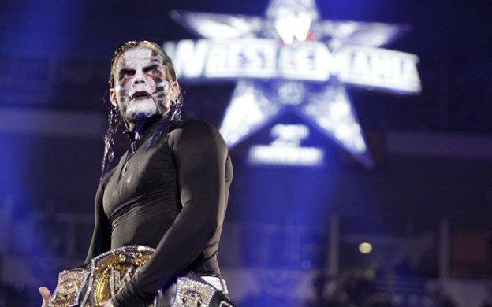

|  |
Jeff Nero HardyAmerican professional wrestler, artist and musician. The Charismatic Enigma. Currently signed to WWE, performing on the Smackdown brand. Previously wrestled with Total Nonstop Action Wrestling (TNA), and Ring of Honor (ROH), as well as several companies on the independent circuit. Leave us a message |
| 1992–1998 | Early career | |
| 1998–2002 | The Hardy Boyz | |
| 2002–2003 | Championship reigns | |
| 2003 | Independent circuit | |
| 2003 | Ring of Honor | |
| 2004–2006 | Total Nonstop Action Wrestling | |
| 2006–2007 | Return to WWE: The Hardy Boyz reunion | |
| 2007–2008 | Intercontinental Champion | |
| 2008–2009 | Rise to main event status and departure | |
| 2010–2011 | Return to TNA: Immortal | |
| 2011–2013 | TNA World Heavyweight Champion | |
| 2013–2014 | Willow | |
| 2014–2016 | The Hardys third reunion | |
| 2016–2017 | Brother Nero | |
| 2017 | Return to ROH | |
| 2017–2018 | Second return to WWE: The Hardy Boyz's return | |
| 2018–2019 | United States Champion | |
| 2020–present | Various feuds |